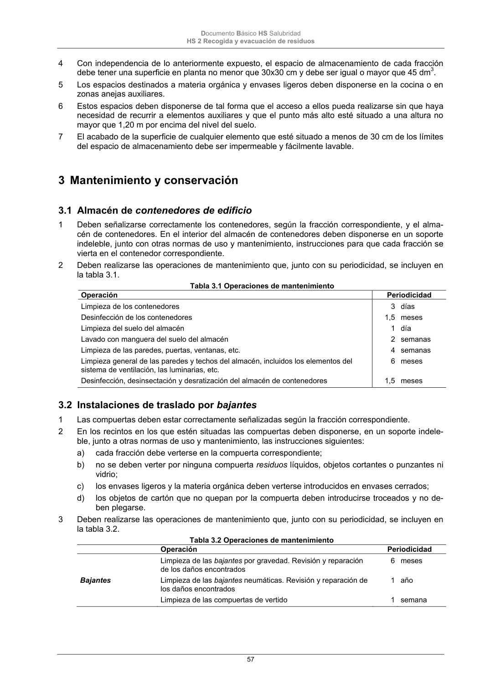

DB-HS Salubridad · edición 2022-06-14 · capa oficial
Documento DB-HS-oficial · SHA-256 del PDF 68df3caacc95f71aee2ec1ba7b2c65ae66155c21e3a8785521b8fdd4fd640d3b
Copia fiel del PDF fuente · Fuente oficial
Ficha de la disposición en la fuente oficial
Formatos: JSON del segmento · Markdown
3 Mantenimiento y conservación 3.1 Almacén de contenedores de edificio 3.1 Almacén de contenedores de edificio 1 Deben señalizarse correctamente los contenedores, según la fracción correspondiente, y el alma- cén de contenedores. En el interior del almacén de contenedores deben disponerse en un soporte indeleble, junto con otras normas de uso y mantenimiento, instrucciones para que cada fracción se vierta en el contenedor correspondiente. 2 Deben realizarse las operaciones de mantenimiento que, junto con su periodicidad, se incluyen en la tabla 3.1. Tabla 3.1 Operaciones de mantenimiento Operación Periodicidad Limpieza de los contenedores Desinfección de los contenedores Limpieza del suelo del almacén Lavado con manguera del suelo del almacén Limpieza de las paredes, puertas, ventanas, etc. Limpieza general de las paredes y techos del almacén, incluidos los elementos del sistema de ventilación, las luminarias, etc. Desinfección, desinsectación y desratización del almacén de contenedores 3 1,5 1 2 4 6 1,5 días meses día semanas semanas meses meses
